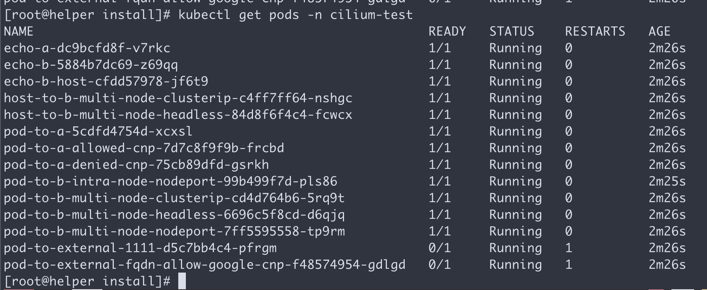
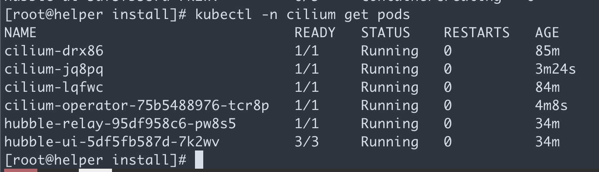
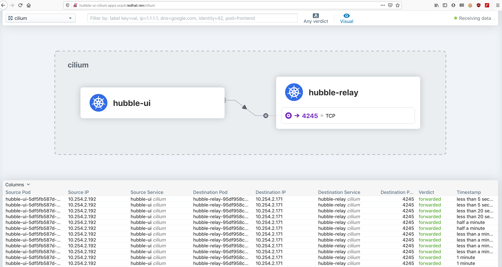
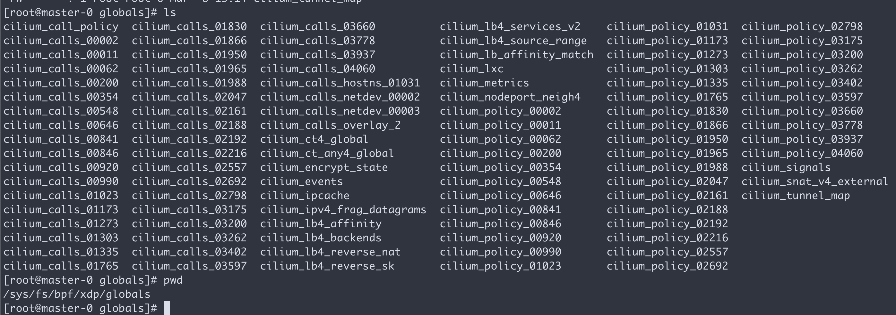

openshift 4.6 静态IP离线 baremetal 安装，采用 cilium 网络插件
based on: https://docs.cilium.io/en/stable/gettingstarted/k8s-install-openshift-okd/
base on cilium v1.9.4
安装过程视频
本文描述ocp4.6在baremetal(kvm模拟)上面，静态ip安装的方法，并使用cilium 网络插件
以下是本次实验的架构图:

离线安装包下载
ocp4.3的离线安装包下载和3.11不太一样，按照如下方式准备。另外，由于默认的baremetal是需要dhcp, pxe环境的，那么需要准备一个工具机，上面有dhcp, tftp, haproxy等工具，另外为了方便项目现场工作，还准备了ignition文件的修改工具，所以离线安装包需要一些其他第三方的工具。
https://github.com/wangzheng422/ocp4-upi-helpernode 这个工具，是创建工具机用的。
https://github.com/wangzheng422/filetranspiler 这个工具，是修改ignition文件用的。
打包好的安装包，在这里下载，百度盘下载链接，版本是4.6.12:
其中包括如下类型的文件：
- ocp4.tgz 这个文件包含了iso等安装介质，以及各种安装脚本，全部下载的镜像列表等。需要复制到宿主机，以及工具机上去。
- registry.tgz 这个文件也是docker image registry的仓库打包文件。需要先补充镜像的话，按照这里操作: 4.6.add.image.md
- install.image.tgz 这个文件是安装集群的时候，需要的补充镜像.
- rhel-data.7.9.tgz 这个文件是 rhel 7 主机的yum更新源，这么大是因为里面有gpu, epel等其他的东西。这个包主要用于安装宿主机，工具机，以及作为计算节点的rhel。
合并这些切分文件，使用类似如下的命令
cat registry.?? > registry.tgz在外网云主机上面准备离线安装源
准备离线安装介质的文档，已经转移到了这里：4.6.build.dist.md
宿主机准备
本次实验，是在一个32C， 256G 的主机上面，用很多个虚拟机安装测试。所以先准备这个宿主机。
如果是多台宿主机，记得一定要调整时间配置，让这些宿主机的时间基本一致，否则证书会出问题。
主要的准备工作有
- 配置yum源
- 配置dns
- 安装镜像仓库
- 配置vnc环境
- 配置kvm需要的网络
- 创建helper kvm
- 配置一个haproxy，从外部导入流量给kvm
以上准备工作，dns部分需要根据实际项目环境有所调整。
本次的宿主机是一台rhel8, 参考这里进行基本的配置配置rhel8.build.kernel.repo.cache.md
cat << EOF > /root/.ssh/config
StrictHostKeyChecking no
UserKnownHostsFile=/dev/null
EOF
cat << EOF >> /etc/hosts
127.0.0.1 registry.ocp4.redhat.ren
EOF
dnf clean all
dnf repolist
dnf -y install byobu htop
systemctl disable --now firewalld
# 配置registry
mkdir -p /etc/crts/ && cd /etc/crts
# https://access.redhat.com/documentation/en-us/red_hat_codeready_workspaces/2.1/html/installation_guide/installing-codeready-workspaces-in-tls-mode-with-self-signed-certificates_crw
openssl genrsa -out /etc/crts/redhat.ren.ca.key 4096
openssl req -x509 \
-new -nodes \
-key /etc/crts/redhat.ren.ca.key \
-sha256 \
-days 36500 \
-out /etc/crts/redhat.ren.ca.crt \
-subj /CN="Local Red Hat Ren Signer" \
-reqexts SAN \
-extensions SAN \
-config <(cat /etc/pki/tls/openssl.cnf \
<(printf '[SAN]\nbasicConstraints=critical, CA:TRUE\nkeyUsage=keyCertSign, cRLSign, digitalSignature'))
openssl genrsa -out /etc/crts/redhat.ren.key 2048
openssl req -new -sha256 \
-key /etc/crts/redhat.ren.key \
-subj "/O=Local Red Hat Ren /CN=*.ocp4.redhat.ren" \
-reqexts SAN \
-config <(cat /etc/pki/tls/openssl.cnf \
<(printf "\n[SAN]\nsubjectAltName=DNS:*.ocp4.redhat.ren,DNS:*.apps.ocp4.redhat.ren,DNS:*.redhat.ren\nbasicConstraints=critical, CA:FALSE\nkeyUsage=digitalSignature, keyEncipherment, keyAgreement, dataEncipherment\nextendedKeyUsage=serverAuth")) \
-out /etc/crts/redhat.ren.csr
openssl x509 \
-req \
-sha256 \
-extfile <(printf "subjectAltName=DNS:*.ocp4.redhat.ren,DNS:*.apps.ocp4.redhat.ren,DNS:*.redhat.ren\nbasicConstraints=critical, CA:FALSE\nkeyUsage=digitalSignature, keyEncipherment, keyAgreement, dataEncipherment\nextendedKeyUsage=serverAuth") \
-days 36500 \
-in /etc/crts/redhat.ren.csr \
-CA /etc/crts/redhat.ren.ca.crt \
-CAkey /etc/crts/redhat.ren.ca.key \
-CAcreateserial -out /etc/crts/redhat.ren.crt
openssl x509 -in /etc/crts/redhat.ren.crt -text
/bin/cp -f /etc/crts/redhat.ren.crt /etc/pki/ca-trust/source/anchors/
update-ca-trust extract
cd /data
mkdir -p /data/registry
# tar zxf registry.tgz
dnf -y install podman pigz skopeo jq
# pigz -dc registry.tgz | tar xf -
cd /data/ocp4
podman load -i /data/ocp4/registry.tgz
podman run --name local-registry -p 5443:5000 \
-d --restart=always \
-v /data/registry/:/var/lib/registry:z \
-v /etc/crts:/certs:z \
-e REGISTRY_HTTP_TLS_CERTIFICATE=/certs/redhat.ren.crt \
-e REGISTRY_HTTP_TLS_KEY=/certs/redhat.ren.key \
docker.io/library/registry:2
# firewall-cmd --permanent --add-port=5443/tcp
# firewall-cmd --reload
# 加载更多的镜像
# 解压缩 ocp4.tgz
bash add.image.load.sh /data/install.image 'registry.ocp4.redhat.ren:5443'
# https://github.com/christianh814/ocp4-upi-helpernode/blob/master/docs/quickstart.md
# 准备vnc环境
vncpasswd
cat << EOF > ~/.vnc/config
session=gnome
securitytypes=vncauth,tlsvnc
desktop=sandbox
geometry=1280x800
alwaysshared
EOF
cat << EOF >> /etc/tigervnc/vncserver.users
:1=root
EOF
systemctl start vncserver@:1
# 如果你想停掉vnc server，这么做
systemctl stop vncserver@:1
# firewall-cmd --permanent --add-port=6001/tcp
# firewall-cmd --permanent --add-port=5901/tcp
# firewall-cmd --reload
# connect vnc at port 5901
# export DISPLAY=:1
# 创建实验用虚拟网络
cat << 'EOF' > /data/kvm/bridge.sh
#!/usr/bin/env bash
PUB_CONN='eno1'
PUB_IP='172.21.6.105/24'
PUB_GW='172.21.6.254'
PUB_DNS='172.21.1.1'
nmcli con down "$PUB_CONN"
nmcli con delete "$PUB_CONN"
nmcli con down baremetal
nmcli con delete baremetal
# RHEL 8.1 appends the word "System" in front of the connection,delete in case it exists
nmcli con down "System $PUB_CONN"
nmcli con delete "System $PUB_CONN"
nmcli connection add ifname baremetal type bridge con-name baremetal ipv4.method 'manual' \
ipv4.address "$PUB_IP" \
ipv4.gateway "$PUB_GW" \
ipv4.dns "$PUB_DNS"
nmcli con add type bridge-slave ifname "$PUB_CONN" master baremetal
nmcli con down "$PUB_CONN";pkill dhclient;dhclient baremetal
nmcli con up baremetal
EOF
nmcli con mod baremetal +ipv4.address '192.168.7.1/24'
nmcli networking off; nmcli networking on
# 创建工具机
mkdir -p /data/kvm
cd /data/kvm
lvremove -f rhel/helperlv
lvcreate -y -L 200G -n helperlv rhel
virt-install --name="ocp4-aHelper" --vcpus=2 --ram=4096 \
--disk path=/dev/rhel/helperlv,device=disk,bus=virtio,format=raw \
--os-variant rhel8.0 --network network=openshift4,model=virtio \
--boot menu=on --location /data/kvm/rhel-8.3-x86_64-dvd.iso \
--initrd-inject helper-ks-rhel8.cfg --extra-args "inst.ks=file:/helper-ks-rhel8.cfg"
# restore kvm
virsh destroy ocp4-aHelper
virsh undefine ocp4-aHelper
# virt-viewer --domain-name ocp4-aHelper
# virsh start ocp4-aHelper
# virsh list --all
# start chrony/ntp server on host
/bin/cp -f /etc/chrony.conf /etc/chrony.conf.default
cat << EOF > /etc/chrony.conf
# pool 2.rhel.pool.ntp.org iburst
driftfile /var/lib/chrony/drift
makestep 1.0 3
rtcsync
allow 192.0.0.0/8
local stratum 10
logdir /var/log/chrony
EOF
systemctl enable --now chronyd
# systemctl restart chronyd
chronyc tracking
chronyc sources -v
chronyc sourcestats -v
chronyc makestep
# setup ftp data root
mount --bind /data/dnf /var/ftp/dnf
chcon -R -t public_content_t /var/ftp/dnf
工具机准备
以下是在工具机里面，进行的安装操作。
主要的操作有
- 配置yum源
- 运行ansible脚本，自动配置工具机
- 上传定制的安装配置文件
- 生成ignition文件
sed -i 's/#UseDNS yes/UseDNS no/g' /etc/ssh/sshd_config
systemctl restart sshd
cat << EOF > /root/.ssh/config
StrictHostKeyChecking no
UserKnownHostsFile=/dev/null
EOF
# in helper node
mkdir /etc/yum.repos.d.bak
mv /etc/yum.repos.d/* /etc/yum.repos.d.bak
export YUMIP="192.168.7.1"
cat << EOF > /etc/yum.repos.d/remote.repo
[remote-epel]
name=epel
baseurl=ftp://${YUMIP}/dnf/epel
enabled=1
gpgcheck=0
[remote-epel-modular]
name=epel-modular
baseurl=ftp://${YUMIP}/dnf/epel-modular
enabled=1
gpgcheck=0
[remote-appstream]
name=appstream
baseurl=ftp://${YUMIP}/dnf/rhel-8-for-x86_64-appstream-rpms
enabled=1
gpgcheck=0
[remote-baseos]
name=baseos
baseurl=ftp://${YUMIP}/dnf/rhel-8-for-x86_64-baseos-rpms
enabled=1
gpgcheck=0
[remote-baseos-source]
name=baseos-source
baseurl=ftp://${YUMIP}/dnf/rhel-8-for-x86_64-baseos-source-rpms
enabled=1
gpgcheck=0
[remote-supplementary]
name=supplementary
baseurl=ftp://${YUMIP}/dnf/rhel-8-for-x86_64-supplementary-rpms
enabled=1
gpgcheck=0
[remote-codeready-builder]
name=supplementary
baseurl=ftp://${YUMIP}/dnf/codeready-builder-for-rhel-8-x86_64-rpms
enabled=1
gpgcheck=0
EOF
yum clean all
yum makecache
yum repolist
yum -y install ansible git unzip podman python3
yum -y update
reboot
# yum -y install ansible git unzip podman python36
mkdir -p /data/ocp4/
# scp ocp4.tgz to /data
# scp /data/down/ocp4.tgz root@192.168.7.11:/data/
# rsync -e ssh --info=progress2 -P --delete -arz /data/ocp4/ root@192.168.7.11:/data/ocp4/
cd /data
tar zvxf ocp4.tgz
cd /data/ocp4
# 这里使用了一个ansible的项目，用来部署helper节点的服务。
# https://github.com/wangzheng422/ocp4-upi-helpernode
unzip ocp4-upi-helpernode.zip
# 这里使用了一个ignition文件合并的项目，用来帮助自定义ignition文件。
# https://github.com/wangzheng422/filetranspiler
podman load -i filetranspiler.tgz
# 接下来，我们使用ansible来配置helper节点，装上各种openshift集群需要的服务
# 根据现场环境，修改 ocp4-upi-helpernode-master/vars-static.yaml
# 主要是修改各个节点的网卡和硬盘参数，还有IP地址
cat << EOF > /data/ocp4/ocp4-upi-helpernode-master/vars-static.rhel8.yaml
---
ssh_gen_key: true
staticips: true
bm_ipi: false
firewalld: false
dns_forward: false
iso:
iso_dl_url: "file:///data/ocp4/rhcos-live.x86_64.iso"
my_iso: "rhcos-live.iso"
helper:
name: "helper"
ipaddr: "192.168.7.11"
networkifacename: "enp1s0"
gateway: "192.168.7.1"
netmask: "255.255.255.0"
dns:
domain: "redhat.ren"
clusterid: "ocp4"
forwarder1: "192.168.7.1"
forwarder2: "192.168.7.1"
api_vip: "192.168.7.11"
ingress_vip: "192.168.7.11"
dhcp:
router: "192.168.7.1"
bcast: "192.168.7.255"
netmask: "255.255.255.0"
poolstart: "192.168.7.70"
poolend: "192.168.7.90"
ipid: "192.168.7.0"
netmaskid: "255.255.255.0"
bootstrap:
name: "bootstrap"
ipaddr: "192.168.7.12"
interface: "enp1s0"
install_drive: "vda"
macaddr: "52:54:00:7e:f8:f7"
masters:
- name: "master-0"
ipaddr: "192.168.7.13"
interface: "enp1s0"
install_drive: "vda"
macaddr: ""
- name: "master-1"
ipaddr: "192.168.7.14"
interface: "enp1s0"
install_drive: "vda"
macaddr: ""
- name: "master-2"
ipaddr: "192.168.7.15"
interface: "enp1s0"
install_drive: "vda"
macaddr: ""
workers:
- name: "worker-0"
ipaddr: "192.168.7.16"
interface: "enp1s0"
install_drive: "vda"
macaddr: ""
- name: "worker-1"
ipaddr: "192.168.7.17"
interface: "enp1s0"
install_drive: "vda"
macaddr: ""
others:
- name: "registry"
ipaddr: "192.168.7.1"
macaddr: "52:54:00:7e:f8:f7"
- name: "yum"
ipaddr: "192.168.7.1"
macaddr: "52:54:00:7e:f8:f7"
- name: "quay"
ipaddr: "192.168.7.1"
macaddr: "52:54:00:7e:f8:f7"
- name: "nexus"
ipaddr: "192.168.7.1"
macaddr: "52:54:00:7e:f8:f7"
- name: "git"
ipaddr: "192.168.7.1"
macaddr: "52:54:00:7e:f8:f7"
otherdomains:
- domain: "rhv.redhat.ren"
hosts:
- name: "manager"
ipaddr: "192.168.7.71"
- name: "rhv01"
ipaddr: "192.168.7.72"
- domain: "cmri-edge.redhat.ren"
hosts:
- name: "*"
ipaddr: "192.168.7.71"
- name: "*.apps"
ipaddr: "192.168.7.72"
force_ocp_download: false
remove_old_config_files: false
ocp_client: "file:///data/ocp4/4.6.16/openshift-client-linux-4.6.16.tar.gz"
ocp_installer: "file:///data/ocp4/4.6.16/openshift-install-linux-4.6.16.tar.gz"
ppc64le: false
arch: 'x86_64'
chronyconfig:
enabled: true
content:
- server: "192.168.7.1"
options: iburst
setup_registry:
deploy: false
registry_image: docker.io/library/registry:2
local_repo: "ocp4/openshift4"
product_repo: "openshift-release-dev"
release_name: "ocp-release"
release_tag: "4.6.1-x86_64"
registry_server: "registry.ocp4.redhat.ren:5443"
EOF
cd /data/ocp4/ocp4-upi-helpernode-master
ansible-playbook -e @vars-static.rhel8.yaml -e '{staticips: true}' tasks/main.yml
# try this:
/usr/local/bin/helpernodecheck
mkdir -p /data/install
# GOTO image registry host
# copy crt files to helper node
scp /etc/crts/redhat.ren.ca.crt root@192.168.7.11:/data/install/
scp /etc/crts/redhat.ren.crt root@192.168.7.11:/data/install/
scp /etc/crts/redhat.ren.key root@192.168.7.11:/data/install/
# GO back to help node
/bin/cp -f /data/install/redhat.ren.crt /etc/pki/ca-trust/source/anchors/
update-ca-trust extract
# 定制ignition
cd /data/install
# 根据现场环境，修改 install-config.yaml
# 至少要修改ssh key， 还有 additionalTrustBundle，这个是镜像仓库的csr
# vi install-config.yaml
cat << EOF > /data/install/install-config.yaml
apiVersion: v1
baseDomain: redhat.ren
compute:
- hyperthreading: Enabled
name: worker
replicas: 0
controlPlane:
hyperthreading: Enabled
name: master
replicas: 3
metadata:
name: ocp4
networking:
clusterNetworks:
- cidr: 10.254.0.0/16
hostPrefix: 24
networkType: Cilium
serviceNetwork:
- 172.30.0.0/16
platform:
none: {}
pullSecret: '$( cat /data/pull-secret.json )'
sshKey: |
$( cat /root/.ssh/helper_rsa.pub | sed 's/^/ /g' )
additionalTrustBundle: |
$( cat /data/install/redhat.ren.ca.crt | sed 's/^/ /g' )
imageContentSources:
- mirrors:
- registry.ocp4.redhat.ren:5443/ocp4/openshift4
source: quay.io/openshift-release-dev/ocp-release
- mirrors:
- registry.ocp4.redhat.ren:5443/ocp4/openshift4
source: quay.io/openshift-release-dev/ocp-v4.0-art-dev
EOF
cd /data/install/
/bin/rm -rf *.ign .openshift_install_state.json auth bootstrap manifests master*[0-9] worker*[0-9]
openshift-install create manifests --dir "./"
cat << EOF > "/data/install/manifests/cluster-network-03-cilium-namespace.yaml"
apiVersion: v1
kind: Namespace
metadata:
name: cilium
annotations:
# node selector is required to make cilium-operator run on control plane nodes
openshift.io/node-selector: ""
labels:
name: cilium
# run level sets priority for Cilium to be deployed prior to other components
openshift.io/run-level: "0"
# enable cluster logging for Cilium namespace
openshift.io/cluster-logging: "true"
# enable cluster monitoring for Cilium namespace
openshift.io/cluster-monitoring: "true"
EOF去一个公网主机
cp /data/ocp4/clients/helm-linux-amd64 /usr/local/bin/helm
chmod +x /usr/local/bin/helm
mkdir -p /data/cilium
cd /data/cilium
helm repo add cilium https://helm.cilium.io/
helm template cilium/cilium --version 1.9.4 \
--namespace cilium \
--set ipam.mode=cluster-pool \
--set cni.binPath=/var/lib/cni/bin \
--set cni.confPath=/var/run/multus/cni/net.d \
--set ipam.operator.clusterPoolIPv4PodCIDR=10.254.0.0/16 \
--set ipam.operator.clusterPoolIPv4MaskSize=24 \
--set nativeRoutingCIDR=10.254.0.0/16 \
--set bpf.masquerade=false \
--set endpointRoutes.enabled=true \
--set hubble.enabled=true \
--set hubble.listenAddress=":4244" \
--set hubble.relay.enabled=true \
--set hubble.ui.enabled=true \
--output-dir "/data/cilium/"
回到 helper
# upload /data/cilium/cilium/templates/ to /data/install/cilium/templates
cd /data/install
for resource in cilium/templates/*
do cp "${resource}" "./manifests/cluster-network-04-cilium-$(basename ${resource})"
done
# 我们换季里面有nexus，那么我们把proxy的补丁打进去
cd /data/ocp4
bash image.registries.conf.sh nexus.ocp4.redhat.ren:8083
mkdir -p /etc/containers/registries.conf.d
/bin/cp -f image.registries.conf /etc/containers/registries.conf.d/
cd /data/install
cp /data/ocp4/99-worker-container-registries.yaml ./manifests/
cp /data/ocp4/99-master-container-registries.yaml ./manifests/
cp /data/ocp4/ocp4-upi-helpernode-master/machineconfig/* ./manifests/
openshift-install create ignition-configs --dir=/data/install
cd /data/ocp4/ocp4-upi-helpernode-master
# 我们来为每个主机，复制自己版本的ign，并复制到web server的目录下
ansible-playbook -e @vars-static.rhel8.yaml -e '{staticips: true}' tasks/ign.yml
# 如果对每个主机有自己ign的独特需求，在这一步，去修改ign。
# 以下操作本来是想设置网卡地址，但是实践发现是不需要的。
# 保留在这里，是因为他可以在安装的时候注入文件，非常有用。
# mkdir -p bootstrap/etc/sysconfig/network-scripts/
# cat <<EOF > bootstrap/etc/sysconfig/network-scripts/ifcfg-ens3
# DEVICE=ens3
# BOOTPROTO=none
# ONBOOT=yes
# IPADDR=192.168.7.12
# NETMASK=255.255.255.0
# GATEWAY=192.168.7.1
# DNS=192.168.7.11
# DNS1=192.168.7.11
# DNS2=192.168.7.1
# DOMAIN=redhat.ren
# PREFIX=24
# DEFROUTE=yes
# IPV6INIT=no
# EOF
# filetranspiler -i bootstrap.ign -f bootstrap -o bootstrap-static.ign
# /bin/cp -f bootstrap-static.ign /var/www/html/ignition/
# 我们为每个节点创建各自的iso文件
cd /data/ocp4/ocp4-upi-helpernode-master
ansible-playbook -e @vars-static.rhel8.yaml -e '{staticips: true}' tasks/iso.yml回到宿主机
本来，到了这一步，就可以开始安装了，但是我们知道coreos装的时候，要手动输入很长的命令行，实际操作的时候，那是不可能输入对的，输入错一个字符，安装就失败，要重启，重新输入。。。
为了避免这种繁琐的操作，参考网上的做法，我们就需要为每个主机定制iso了。好在，之前的步骤，我们已经用ansible创建了需要的iso，我们把这些iso复制到宿主机上，就可以继续了。
这里面有一个坑，我们是不知道主机的网卡名称的，只能先用coreos iso安装启动一次，进入单用户模式以后，ip a 来查看以下，才能知道，一般来说，是ens3。
另外，如果是安装物理机，disk是哪个，也需要上述的方法，来看看具体的盘符。另外，推荐在物理机上安装rhel 8 来测试一下物理机是不是支持coreos。物理机安装的时候，遇到不写盘的问题，可以尝试添加启动参数： ignition.firstboot=1
# on kvm host
export KVM_DIRECTORY=/data/kvm
cd ${KVM_DIRECTORY}
scp root@192.168.7.11:/data/install/*.iso ${KVM_DIRECTORY}/
remove_lv() {
var_vg=$1
var_lv=$2
lvremove -f $var_vg/$var_lv
}
create_lv() {
var_vg=$1
var_lv=$2
lvcreate -y -L 120G -n $var_lv $var_vg
wipefs --all --force /dev/$var_vg/$var_lv
}
remove_lv rhel bootstraplv
remove_lv nvme master0lv
remove_lv nvme master1lv
remove_lv nvme master2lv
remove_lv rhel worker0lv
remove_lv rhel worker1lv
create_lv rhel bootstraplv
create_lv nvme master0lv
create_lv nvme master1lv
create_lv nvme master2lv
create_lv rhel worker0lv
create_lv rhel worker1lv
# finally, we can start install :)
# 你可以一口气把虚拟机都创建了，然后喝咖啡等着。
# 从这一步开始，到安装完毕，大概30分钟。
virt-install --name=ocp4-bootstrap --vcpus=4 --ram=8192 \
--cpu=host-model \
--disk path=/dev/rhel/bootstraplv,device=disk,bus=virtio,format=raw \
--os-variant rhel8.0 --network bridge=baremetal,model=virtio \
--boot menu=on --cdrom ${KVM_DIRECTORY}/rhcos_install-bootstrap.iso
# 想登录进coreos一探究竟？那么这么做
# ssh core@bootstrap
# journalctl -b -f -u bootkube.service
virt-install --name=ocp4-master0 --vcpus=6 --ram=36864 \
--cpu=host-model \
--disk path=/dev/nvme/master0lv,device=disk,bus=virtio,format=raw \
--os-variant rhel8.0 --network bridge=baremetal,model=virtio \
--boot menu=on --cdrom ${KVM_DIRECTORY}/rhcos_install-master-0.iso
# ssh core@192.168.7.13
virt-install --name=ocp4-master1 --vcpus=6 --ram=36864 \
--cpu=host-model \
--disk path=/dev/nvme/master1lv,device=disk,bus=virtio,format=raw \
--os-variant rhel8.0 --network bridge=baremetal,model=virtio \
--boot menu=on --cdrom ${KVM_DIRECTORY}/rhcos_install-master-1.iso
virt-install --name=ocp4-master2 --vcpus=6 --ram=36864 \
--cpu=host-model \
--disk path=/dev/nvme/master2lv,device=disk,bus=virtio,format=raw \
--os-variant rhel8.0 --network bridge=baremetal,model=virtio \
--boot menu=on --cdrom ${KVM_DIRECTORY}/rhcos_install-master-2.iso
# we add gpu passthrough into kvm
# look ./4.6.gpu.passthrough.md to find how to
lspci -n | grep 10de:1eb8
# 05:00.0 0302: 10de:1eb8 (rev a1)
virsh nodedev-list | grep pci | grep 05_00_0
# pci_0000_05_00_0
# https://docs.nvidia.com/grid/11.0/grid-vgpu-user-guide/index.html#using-gpu-pass-through
virsh nodedev-dumpxml pci_0000_05_00_0| egrep 'domain|bus|slot|function'
# <domain>0</domain>
# <bus>5</bus>
# <slot>0</slot>
# <function>0</function>
# <capability type='virt_functions' maxCount='16'/>
# <address domain='0x0000' bus='0x05' slot='0x00' function='0x0'/>
# if it is gpu passthrough
virt-install --name=ocp4-worker0 --vcpus=6 --ram=36864 \
--cpu=host-model \
--disk path=/dev/rhel/worker0lv,device=disk,bus=virtio,format=raw \
--os-variant rhel8.0 --network bridge=baremetal,model=virtio \
--host-device=pci_0000_05_00_0 \
--boot menu=on --cdrom ${KVM_DIRECTORY}/rhcos_install-worker-0.iso
# if it is vgpu
virt-install --name=ocp4-worker0 --vcpus=6 --ram=36864 \
--cpu=host-model \
--disk path=/dev/rhel/worker0lv,device=disk,bus=virtio,format=raw \
--os-variant rhel8.0 --network bridge=baremetal,model=virtio \
--boot menu=on --cdrom ${KVM_DIRECTORY}/rhcos_install-worker-0.iso
# on workstation
# open http://192.168.7.11:9000/
# to check
# if you want to stop or delete vm, try this
virsh list --all
virsh destroy ocp4-bootstrap
virsh undefine ocp4-bootstrap
virsh destroy ocp4-master0
virsh destroy ocp4-master1
virsh destroy ocp4-master2
virsh destroy ocp4-worker0
virsh destroy ocp4-worker1
virsh undefine ocp4-master0
virsh undefine ocp4-master1
virsh undefine ocp4-master2
virsh undefine ocp4-worker0
virsh undefine ocp4-worker1在工具机上面
这个时候，安装已经自动开始了，我们只需要回到工具机上静静的观察就可以了。
在bootstrap和装master阶段，用这个命令看进度。
cd /data/ocp4
export KUBECONFIG=/data/install/auth/kubeconfig
echo "export KUBECONFIG=/data/install/auth/kubeconfig" >> ~/.bashrc
oc completion bash | sudo tee /etc/bash_completion.d/openshift > /dev/null
cd /data/install
openshift-install wait-for bootstrap-complete --log-level debug一切正常的话，会看到这个。 
有时候证书会过期，验证方法是登录 bootstrap, 看看过期时间。如果确定过期，要清除所有的openshift-install生成配置文件的缓存，重新来过。
echo | openssl s_client -connect localhost:6443 | openssl x509 -noout -text | grep Not一般来说，如果在openshift-install这一步之前，按照文档，删除了缓存文件，就不会出现过期的现象。
oc get nodes这个时候，只能看到master，是因为worker的csr没有批准。如果虚拟机是一口气创建的，那么多半不会遇到下面的问题。
oc get csr会发现有很多没有被批准的 
批准之
yum -y install jq
oc get csr | grep -v Approved
oc get csr -ojson | jq -r '.items[] | select(.status == {} ) | .metadata.name' | xargs oc adm certificate approve
# oc get csr -o name | xargs oc adm certificate approve然后worker 节点cpu飙高，之后就能看到worker了。 
等一会，会看到这个，就对了。 
上面的操作完成以后，就可以完成最后的安装了
openshift-install wait-for install-complete --log-level debug
# here is the output
# INFO Install complete!
# INFO To access the cluster as the system:admin user when using 'oc', run 'export KUBECONFIG=/data/install/auth/kubeconfig'
# INFO Access the OpenShift web-console here: https://console-openshift-console.apps.ocp4.redhat.ren
# INFO Login to the console with user: "kubeadmin", and password: "ngc8Z-hWogN-HcVYJ-UGXcs"
# 由于cilium的pod第一次启动好像不正常，我们要统一重启一下
oc -n cilium delete pod --all 测试 cilium
# wget https://raw.githubusercontent.com/cilium/cilium/1.9.4/examples/kubernetes/connectivity-check/connectivity-check.yaml
kubectl apply -f - << EOF
apiVersion: security.openshift.io/v1
kind: SecurityContextConstraints
metadata:
name: cilium-test
allowHostPorts: true
allowHostNetwork: true
users:
- system:serviceaccount:cilium-test:default
priority: null
readOnlyRootFilesystem: false
runAsUser:
type: MustRunAsRange
seLinuxContext:
type: MustRunAs
volumes: null
allowHostDirVolumePlugin: false
allowHostIPC: false
allowHostPID: false
allowPrivilegeEscalation: false
allowPrivilegedContainer: false
allowedCapabilities: null
defaultAddCapabilities: null
requiredDropCapabilities: null
groups: null
EOF
cd /data/install
kubectl create ns cilium-test
kubectl apply -n cilium-test -f /data/install/cilium/connectivity-check.yaml
kubectl get pods -n cilium-test
# the result see below pic
# restore
kubectl delete ns cilium-test
kubectl delete scc cilium-test因为我们是一个离线环境，所以连接外网的最后2个测试，肯定不能通过，其他都是正常的，所以是没问题的。

接下来，我们按照hubble，算是一个前端吧
oc apply -f /data/install/cilium/templates/
kubectl -n cilium get pods
# restore
# oc delete -f /data/install/cilium/templates/cilium看来还有点稳定性问题，有几个pod需要重启，hubble才能装上。

接下来，我们就测试一下酷酷的界面吧
open: http://hubble-ui-cilium.apps.ocp4.redhat.ren/

# kubectl port-forward -n kube-system svc/hubble-ui --address 0.0.0.0 --address :: 12000:80
# 我们创建一个测试应用
# wget https://raw.githubusercontent.com/cilium/cilium/1.9.4/examples/minikube/http-sw-app.yaml
oc create -n default -f /data/install/cilium/http-sw-app.yaml
oc expose svc hubble-ui -n cilium
oc project default
kubectl exec xwing -- curl -s -XPOST deathstar.default.svc.cluster.local/v1/request-landing
kubectl exec tiefighter -- curl -s -XPOST deathstar.default.svc.cluster.local/v1/request-landing
# kubectl port-forward -n cilium svc/hubble-ui --address 0.0.0.0 --address :: 12000:80
# kubectl -n cilium get pods -l k8s-app=cilium
POD=$( oc -n cilium get pod -l k8s-app=cilium -o json | jq -r '.items[0].metadata | select( .name | contains("cilium") ) | .name' )
echo $POD
kubectl -n cilium exec $POD -- cilium endpoint list
# ENDPOINT POLICY (ingress) POLICY (egress) IDENTITY LABELS (source:key[=value])
# IPv6 IPv4 STATUS
# ENFORCEMENT ENFORCEMENT
# 292 Disabled Disabled 47012 k8s:app=network-metrics-daemon
# 10.254.2.215 ready
# k8s:component=network
# k8s:io.cilium.k8s.namespace.labels.name=openshift-multus
# k8s:io.cilium.k8s.namespace.labels.olm.operatorgroup.uid/2280aae5-4b08-41a3-a491-$
# fb50008331e
# k8s:io.cilium.k8s.namespace.labels.openshift.io/cluster-monitoring=true
# k8s:io.cilium.k8s.namespace.labels.openshift.io/run-level=0
# k8s:io.cilium.k8s.policy.cluster=default
# k8s:io.cilium.k8s.policy.serviceaccount=metrics-daemon-sa
# k8s:io.kubernetes.pod.namespace=openshift-multus
# k8s:openshift.io/component=network
# k8s:type=infra
kubectl -n cilium exec $POD -- cilium status
# KVStore: Ok Disabled
# Kubernetes: Ok 1.19 (v1.19.0+e49167a) [linux/amd64]
# Kubernetes APIs: ["cilium/v2::CiliumClusterwideNetworkPolicy", "cilium/v2::CiliumEndpoint", "cilium/v2::CiliumNetworkPolicy", "cilium/v2::CiliumNode", "core/v1::Namespace", "core/v1::Node", "core/v1::Pods", "core/v1::Service", "discovery/v1beta1::EndpointSlice", "networking.k8s.io/v1::NetworkPolicy"]
# KubeProxyReplacement: Probe [enp1s0 (Direct Routing)]
# Cilium: Ok OK
# NodeMonitor: Listening for events on 6 CPUs with 64x4096 of shared memory
# Cilium health daemon: Ok
# IPAM: IPv4: 10/255 allocated from 10.254.2.0/24,
# BandwidthManager: Disabled
# Host Routing: Legacy
# Masquerading: IPTables
# Controller Status: 50/50 healthy
# Proxy Status: OK, ip 10.254.2.79, 0 redirects active on ports 10000-20000
# Hubble: Ok Current/Max Flows: 4096/4096 (100.00%), Flows/s: 71.25 Metrics: Disabled
# Cluster health: 3/3 reachable (2021-03-08T13:10:50Z)
kubectl -n cilium exec $POD -- cilium status --all-addresses
# KVStore: Ok Disabled
# Kubernetes: Ok 1.19 (v1.19.0+e49167a) [linux/amd64]
# Kubernetes APIs: ["cilium/v2::CiliumClusterwideNetworkPolicy", "cilium/v2::CiliumEndpoint", "cilium/v2::CiliumNetworkPolicy", "cilium/v2::CiliumNode", "core/v1::Namespace", "core/v1::Node", "core/v1::Pods", "core/v1::Service", "discovery/v1beta1::EndpointSlice", "networking.k8s.io/v1::NetworkPolicy"]
# KubeProxyReplacement: Probe [enp1s0 (Direct Routing)]
# Cilium: Ok OK
# NodeMonitor: Listening for events on 6 CPUs with 64x4096 of shared memory
# Cilium health daemon: Ok
# IPAM: IPv4: 12/255 allocated from 10.254.2.0/24,
# Allocated addresses:
# 10.254.2.131 (openshift-multus/multus-admission-controller-c56l8 [restored])
# 10.254.2.132 (openshift-monitoring/alertmanager-main-0 [restored])
# 10.254.2.15 (openshift-monitoring/prometheus-k8s-0 [restored])
# 10.254.2.171 (cilium/hubble-relay-95df958c6-2jxwl)
# 10.254.2.192 (cilium/hubble-ui-5df5fb587d-6l75r)
# 10.254.2.195 (health)
# 10.254.2.215 (openshift-multus/network-metrics-daemon-vjkmr [restored])
# 10.254.2.245 (openshift-controller-manager/controller-manager-bj29h [restored])
# 10.254.2.35 (openshift-apiserver/apiserver-5c67746947-bd2wp [restored])
# 10.254.2.79 (router)
# 10.254.2.90 (openshift-dns/dns-default-hggxx [restored])
# 10.254.2.97 (openshift-oauth-apiserver/apiserver-549f94565d-kl6bb [restored])
# BandwidthManager: Disabled
# Host Routing: Legacy
# Masquerading: IPTables
# Controller Status: 66/66 healthy
# Proxy Status: OK, ip 10.254.2.79, 0 redirects active on ports 10000-20000
# Hubble: Ok Current/Max Flows: 4096/4096 (100.00%), Flows/s: 68.96 Metrics: Disabled
# Cluster health: 3/3 reachable (2021-03-08T14:47:09Z)
kubectl get cn master-0 -o yaml
# ...
# spec:
# addresses:
# - ip: 192.168.7.13
# type: InternalIP
# - ip: 10.254.0.184
# type: CiliumInternalIP
# azure: {}
# encryption: {}
# eni: {}
# health:
# ipv4: 10.254.0.167
# ipam:
# podCIDRs:
# - 10.254.0.0/24
# ...
# 让我们用bpftool来查看一下系统里面都有啥
oc -n cilium exec $POD -- bpftool net list
# xdp:
# tc:
# enp1s0(2) clsact/ingress bpf_netdev_enp1s0.o:[from-netdev] id 1077
# enp1s0(2) clsact/egress bpf_netdev_enp1s0.o:[to-netdev] id 1083
# cilium_net(3) clsact/ingress bpf_host_cilium_net.o:[to-host] id 1070
# cilium_host(4) clsact/ingress bpf_host.o:[to-host] id 1032
# cilium_host(4) clsact/egress bpf_host.o:[from-host] id 1045
# cilium_vxlan(5) clsact/ingress bpf_overlay.o:[from-overlay] id 923
# cilium_vxlan(5) clsact/egress bpf_overlay.o:[to-overlay] id 928
# lxc2818365dcf52(9) clsact/ingress bpf_lxc.o:[from-container] id 984
# lxc2818365dcf52(9) clsact/egress bpf_lxc.o:[to-container] id 1020
# lxcc899b45a3e26(11) clsact/ingress bpf_lxc.o:[from-container] id 944
# lxcc899b45a3e26(11) clsact/egress bpf_lxc.o:[to-container] id 975
# lxcad116d75c844(15) clsact/ingress bpf_lxc.o:[from-container] id 950
# lxcad116d75c844(15) clsact/egress bpf_lxc.o:[to-container] id 980
# lxc2fda292e3d0b(19) clsact/ingress bpf_lxc.o:[from-container] id 939
# lxc2fda292e3d0b(19) clsact/egress bpf_lxc.o:[to-container] id 968
# lxc3c9c10774fe9(21) clsact/ingress bpf_lxc.o:[from-container] id 948
# lxc3c9c10774fe9(21) clsact/egress bpf_lxc.o:[to-container] id 986
# lxc17eb3d9acd1f(25) clsact/ingress bpf_lxc.o:[from-container] id 1009
# lxc17eb3d9acd1f(25) clsact/egress bpf_lxc.o:[to-container] id 1063
# lxccd70d8b98510(27) clsact/ingress bpf_lxc.o:[from-container] id 1005
# lxccd70d8b98510(27) clsact/egress bpf_lxc.o:[to-container] id 1043
# lxc90379056af7f(29) clsact/ingress bpf_lxc.o:[from-container] id 941
# lxc90379056af7f(29) clsact/egress bpf_lxc.o:[to-container] id 977
# lxc_health(51) clsact/ingress bpf_lxc.o:[from-container] id 1089
# lxc_health(51) clsact/egress bpf_lxc.o:[to-container] id 1095
# lxc9b377d665f9f(53) clsact/ingress bpf_lxc.o:[from-container] id 1007
# lxc9b377d665f9f(53) clsact/egress bpf_lxc.o:[to-container] id 1040
# lxc1e3c45bc89b2(55) clsact/ingress bpf_lxc.o:[from-container] id 1018
# lxc1e3c45bc89b2(55) clsact/egress bpf_lxc.o:[to-container] id 1050
# flow_dissector:
在节点上，也能看到bpf加载了

# pod 里面的ip
ip a
# 1: lo: <LOOPBACK,UP,LOWER_UP> mtu 65536 qdisc noqueue state UNKNOWN qlen 1000
# link/loopback 00:00:00:00:00:00 brd 00:00:00:00:00:00
# inet 127.0.0.1/8 scope host lo
# valid_lft forever preferred_lft forever
# inet6 ::1/128 scope host
# valid_lft forever preferred_lft forever
# 18: eth0@if19: <BROADCAST,MULTICAST,UP,LOWER_UP,M-DOWN> mtu 1500 qdisc noqueue state UP
# link/ether f2:93:a4:bd:7b:38 brd ff:ff:ff:ff:ff:ff
# inet 10.254.1.174/32 scope global eth0
# valid_lft forever preferred_lft forever
# inet6 fe80::f093:a4ff:febd:7b38/64 scope link
# valid_lft forever preferred_lft forever镜像仓库代理 / image registry proxy
准备离线镜像仓库非常麻烦，好在我们找到了一台在线的主机，那么我们可以使用nexus构造image registry proxy，在在线环境上面，做一遍PoC，然后就能通过image registry proxy得到离线镜像了
- https://mtijhof.wordpress.com/2018/07/23/using-nexus-oss-as-a-proxy-cache-for-docker-images/
#####################################################
# init build the nexus fs
/bin/cp -f nexus-image.tgz /data/ccn/
tar zxf nexus-image.tgz
chown -R 200 /data/ccn/nexus-image
# podman run -d -p 8082:8081 -p 8083:8083 -it --name nexus-image -v /data/ccn/nexus-image:/nexus-data:Z docker.io/sonatype/nexus3:3.29.0
podman run -d -p 8082:8081 -p 8083:8083 -p 8084:8084 -it --name nexus-image -v /data/ccn/nexus-image:/nexus-data:Z docker.io/wangzheng422/imgs:nexus3-3.29.0-wzh
podman stop nexus-image
podman rm nexus-image
# get the admin password
cat /data/ccn/nexus-image/admin.password && echo
# 84091bcd-c82f-44a3-8b7b-dfc90f5b7da1
# open http://nexus.ocp4.redhat.ren:8082
# how to cleanup
# https://github.com/wangzheng422/nexus-docker-cleanup
# 开启 https
# https://blog.csdn.net/s7799653/article/details/105378645
# https://help.sonatype.com/repomanager3/system-configuration/configuring-ssl#ConfiguringSSL-InboundSSL-ConfiguringtoServeContentviaHTTPS
mkdir -p /data/install/tmp
cd /data/install/tmp
# 将证书导出成pkcs格式
# 这里需要输入密码 用 password，
openssl pkcs12 -export -out keystore.pkcs12 -inkey /etc/crts/redhat.ren.key -in /etc/crts/redhat.ren.crt
cat << EOF >> Dockerfile
FROM docker.io/sonatype/nexus3:3.29.0
USER root
COPY keystore.pkcs12 /keystore.pkcs12
RUN keytool -v -importkeystore -srckeystore keystore.pkcs12 -srcstoretype PKCS12 -destkeystore keystore.jks -deststoretype JKS -storepass password -srcstorepass password &&\
cp keystore.jks /opt/sonatype/nexus/etc/ssl/
USER nexus
EOF
buildah bud --format=docker -t docker.io/wangzheng422/imgs:nexus3-3.29.0-wzh -f Dockerfile .
buildah push docker.io/wangzheng422/imgs:nexus3-3.29.0-wzh
######################################################
# go to helper, update proxy setting for ocp cluster
cd /data/ocp4
bash image.registries.conf.sh nexus.ocp4.redhat.ren:8083
mkdir -p /etc/containers/registries.conf.d
/bin/cp -f image.registries.conf /etc/containers/registries.conf.d/
cd /data/ocp4
oc apply -f ./99-worker-container-registries.yaml -n openshift-config
oc apply -f ./99-master-container-registries.yaml -n openshift-config
######################################################
# dump the nexus image fs out
podman stop nexus-image
var_date=$(date '+%Y-%m-%d-%H%M')
echo $var_date
cd /data/ccn
tar cf - ./nexus-image | pigz -c > nexus-image.tgz
buildah from --name onbuild-container scratch
buildah copy onbuild-container nexus-image.tgz /
buildah umount onbuild-container
buildah commit --rm --format=docker onbuild-container docker.io/wangzheng422/nexus-fs:image-$var_date
# buildah rm onbuild-container
# rm -f nexus-image.tgz
buildah push docker.io/wangzheng422/nexus-fs:image-$var_date
echo "docker.io/wangzheng422/nexus-fs:image-$var_date"
# 以下这个版本，可以作为初始化的image proxy，里面包含了nfs provision，以及sample operator的metadata。很高兴的发现，image stream并不会完全下载镜像，好想只是下载metadata，真正用的时候，才去下载。
# docker.io/wangzheng422/nexus-fs:image-2020-12-26-1118配置镜像仓库的ca
安装过程里面，已经把镜像仓库的ca放进去了，但是好想image stream不认，让我们再试试
oc project openshift-config
oc create configmap ca.for.registry -n openshift-config \
--from-file=registry.ocp4.redhat.ren..5443=/data/install/redhat.ren.ca.crt \
--from-file=nexus.ocp4.redhat.ren..8083=/data/install/redhat.ren.ca.crt
oc patch image.config.openshift.io/cluster -p '{"spec":{"additionalTrustedCA":{"name":"ca.for.registry"}}}' --type=merge
# oc patch image.config.openshift.io/cluster -p '{"spec":{"registrySources":{"insecureRegistries":["nexus.ocp4.redhat.ren:8083"]}}}' --type=merge
oc get image.config.openshift.io/cluster -o yaml
# openshift project下面的image stream重新加载一下把
oc get is -o json | jq -r '.items[].metadata.name' | xargs -L1 oc import-image --all 我们的工具机是带nfs的，那么就配置高档一些的nfs存储吧，不要用emptydir
bash /data/ocp4/ocp4-upi-helpernode-master/files/nfs-provisioner-setup.sh
# oc edit configs.imageregistry.operator.openshift.io
# 修改 storage 部分
# storage:
# pvc:
# claim:
oc patch configs.imageregistry.operator.openshift.io cluster -p '{"spec":{"managementState": "Managed","storage":{"pvc":{"claim":""}}}}' --type=merge
oc patch configs.imageregistry.operator.openshift.io cluster -p '{"spec":{"managementState": "Removed"}}' --type=merge
oc get clusteroperator image-registry
oc get configs.imageregistry.operator.openshift.io cluster -o yaml
# 把imagepruner给停掉
# https://bugzilla.redhat.com/show_bug.cgi?id=1852501#c24
# oc patch imagepruner.imageregistry/cluster --patch '{"spec":{"suspend":true}}' --type=merge
# oc -n openshift-image-registry delete jobs --all
oc get configs.samples.operator.openshift.io/cluster -o yaml
oc patch configs.samples.operator.openshift.io/cluster -p '{"spec":{"managementState": "Managed"}}' --type=merge
oc patch configs.samples.operator.openshift.io/cluster -p '{"spec":{"managementState": "Unmanaged"}}' --type=merge
oc patch configs.samples.operator.openshift.io/cluster -p '{"spec":{"managementState": "Removed"}}' --type=merge配置一下本地的dns ( 把 *.apps.ocp4.redhat.ren 配置成
192.168.7.11 )
，指向工具机的haproxy，打开浏览器就能访问管理界面了 
chrony/NTP 设置
在 ocp 4.6 里面，需要设定ntp同步，我们之前ansible脚本，已经创建好了ntp的mco配置，把他打到系统里面就好了。
oc apply -f /data/ocp4/ocp4-upi-helpernode-master/machineconfig/Operator Hub 离线安装
https://docs.openshift.com/container-platform/4.2/operators/olm-restricted-networks.html
https://github.com/operator-framework/operator-registry
https://www.cnblogs.com/ericnie/p/11777384.html?from=timeline&isappinstalled=0
https://access.redhat.com/documentation/en-us/openshift_container_platform/4.2/html-single/images/index
operator hub 准备分2个层次，一个是本文章描述的，制作operator hub的离线资源，并镜像operator 镜像。做到这一步，能够在离线部署的ocp4.2上，看到operator hub，并且能够部署operator。但是如果要用operator来部署要用的组件，那么operator会再去下载镜像，这个层次的镜像，也需要离线部署，但是由于每个operator需要的镜像都不一样，也没有统一的地方进行描述，所以需要各个项目现场，根据需要另外部署，本项目会尽量多的下载需要的镜像，但是目前无法避免遗漏。
# on helper node， 在工具机上
cd /data/ocp4
# scp /etc/crts/redhat.ren.crt 192.168.7.11:/root/ocp4/
# https://docs.openshift.com/container-platform/4.4/builds/setting-up-trusted-ca.html
oc project openshift-config
oc create configmap ca.for.registry -n openshift-config \
--from-file=registry.ocp4.redhat.ren..5443=/data/install/redhat.ren.crt
# 如果你想删除这个config map，这么做
# oc delete configmap ca.for.registry
oc patch image.config.openshift.io/cluster -p '{"spec":{"additionalTrustedCA":{"name":"ca.for.registry"}}}' --type=merge
# oc patch image.config.openshift.io/cluster -p '{"spec":{"registrySources":{"insecureRegistries":["registry.redhat.ren"]}}}' --type=merge
oc get image.config.openshift.io/cluster -o yaml
# 以下这个步骤是官网文档要做的，实践中发现，disconnected环境不需要
# oc patch OperatorHub cluster --type json -p '[{"op": "add", "path": "/spec/disableAllDefaultSources", "value": true}]'
# 如果你不小心还是照着官网做了，用如下步骤删掉
# oc patch OperatorHub cluster --type json -p '[{"op": "remove", "path": "/spec/disableAllDefaultSources"}]'
oc patch OperatorHub cluster --type json \
-p '[{"op": "add", "path": "/spec/disableAllDefaultSources", "value": true}]'
oc get OperatorHub cluster -o yaml
# yum -y install python36
# 根据项目现场情况，调整参数，运行以下命令，生成配置文件，指向内网镜像仓库
cd /data/ocp4/
bash image.registries.conf.sh registry.ocp4.redhat.ren:5443
# 由于某些ocp 4.2的更新机制，以下操作会触发集群更新，
# 集群节点会逐个重启，集群组件也会逐个重启，请等待集群重启完毕。
oc apply -f ./99-worker-container-registries.yaml -n openshift-config
oc apply -f ./99-master-container-registries.yaml -n openshift-config
# ！！！正常情况，以下操作不需要！！！
# 以下操作，删除mirror镜像信息，也会触发集群更新操作，请等待集群重启完毕
oc delete -f ./99-worker-container-registries.yaml -n openshift-config
oc delete -f ./99-master-container-registries.yaml -n openshift-config
watch oc get machineconfigpools
watch oc get node从监控界面，能看到节点在升级，重启。 
oc get pods -n openshift-marketplace
oc get catalogsource -n openshift-marketplace
oc get packagemanifest -n openshift-marketplace能看到operator 列表 
部署一个operator也能成功 

other tips
# disable cluster upgrade check, and insight check
oc scale --replicas 0 -n openshift-cluster-version deployments/cluster-version-operator
oc scale --replicas 0 -n openshift-insights deployments/insights-operator
# set master and worker combine
# https://github.com/openshift-telco/openshift4x-poc/blob/master/MASTER-WORKER-COMBINED.md
oc edit schedulers cluster
# apiVersion: config.openshift.io/v1
# kind: Scheduler
# metadata:
# name: cluster
# spec:
# mastersSchedulable: true以下是参考材料
https://www.openshift.com/blog/delivering-a-three-node-architecture-for-edge-deployments